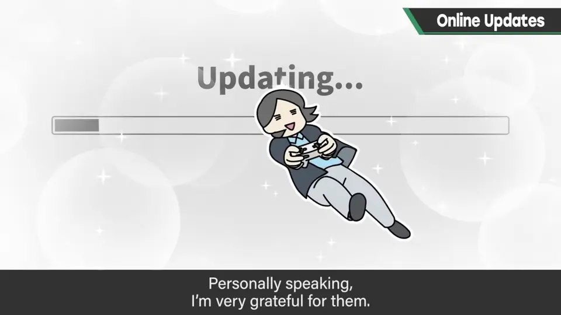
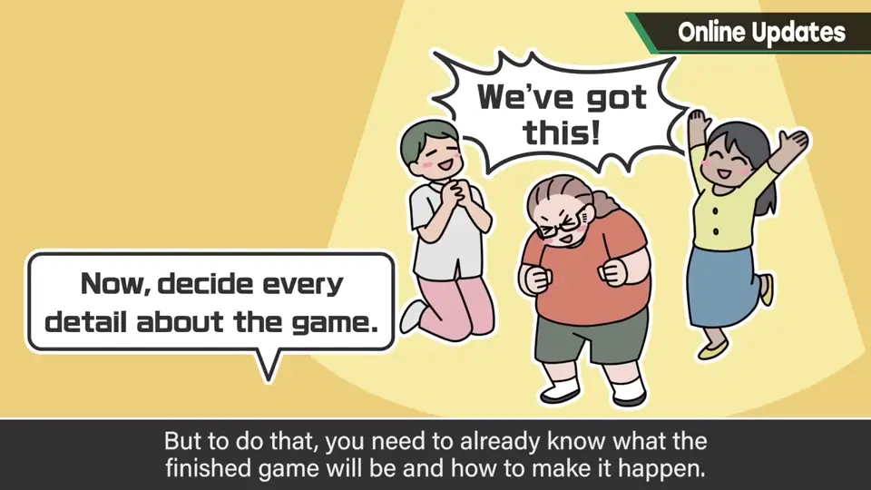
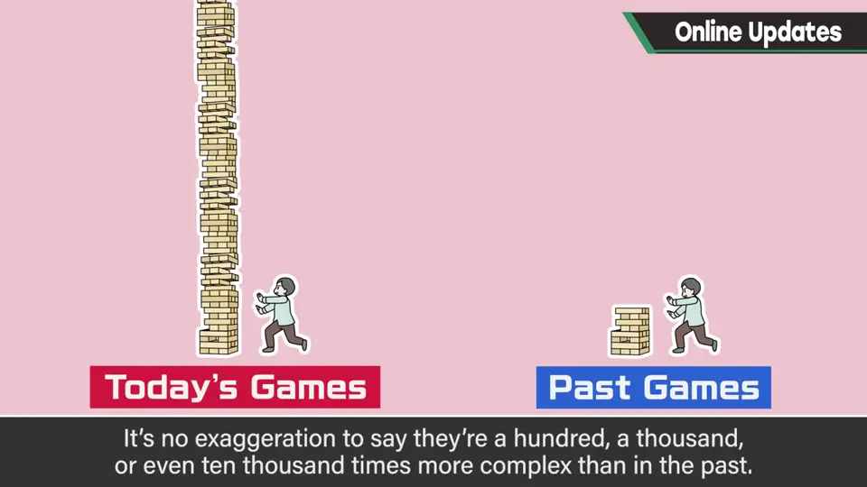
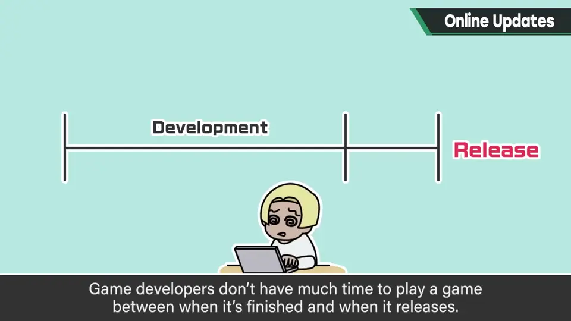
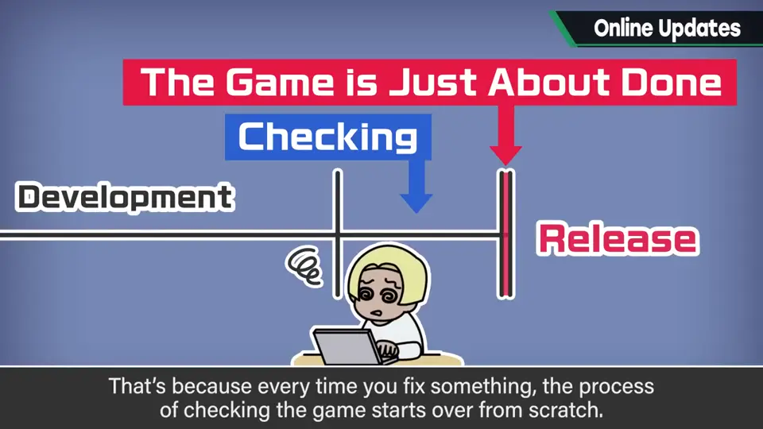
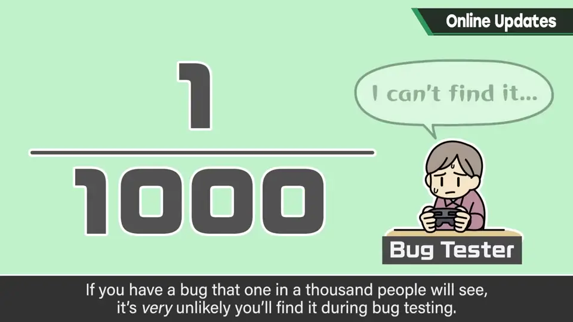
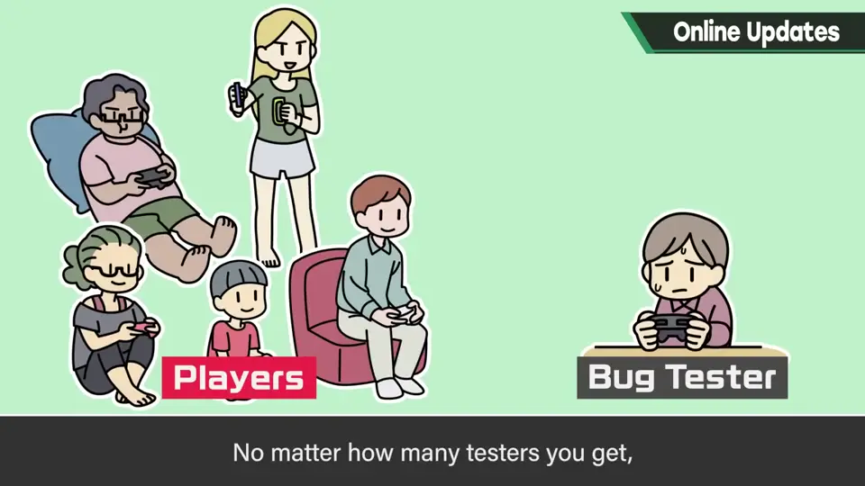
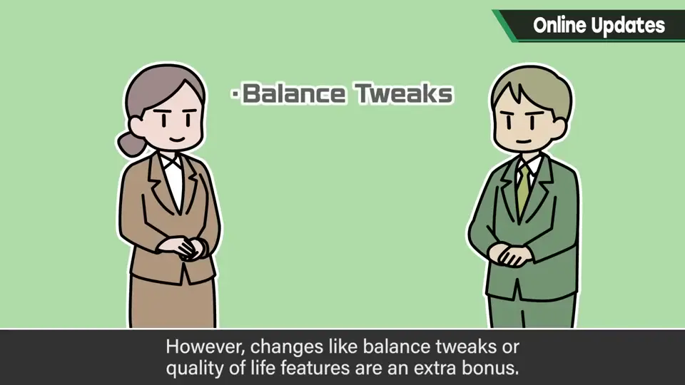
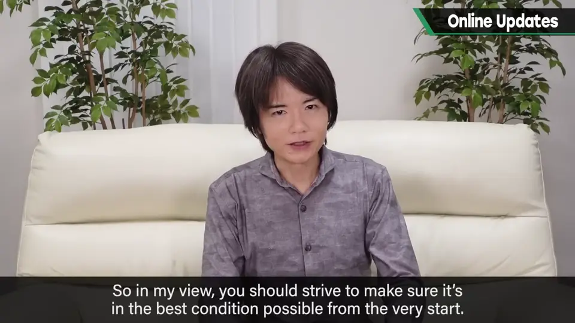

速览
你怎么看在线更新？樱井坦率地说很感激，非常感谢各公司的努力。站在制作方说这件事可能像找借口，但请当作了解制作内情者的看法——这也是他对自己没参与的项目的感受。如果所有东西都以万全的调整迎接发售日当然最好，但那只有流程和完成形态都已确定时才做得到，在最近的游戏里几乎不可能。他列了四点：①现在的游戏太复杂：尤其盒装游戏结构极复杂，与过去差 100 倍、1000 倍甚至 1 万倍也不夸张；巨大的数据会出现不像数字产物的不确定性，其实一切都正确运行就已经是奇迹。②制作中玩不到完成版：从软件成为完成版到发售，制作者没多少时间玩；某处一修改，就得从头再来才成为完成版，所以能接触到完全没再修改的游戏的时间非常短。③市场的测试力天差地别：千分之一的人会遇到的 bug，在调试中发现的可能性很低；但如今这千分之一的人能把视频传到网上。调试找几百人，游戏一上市，尝试次数也是完全不同的量级；知道了就容易复现的 bug，在每天都在变化、需要重新检查的调试期也无法保证全部找到。游戏平衡也一样。④更新终究是自发的服务：会导致游戏卡死的致命 bug 当然该修；但平衡调整、让人更舒适的改进，是厂商的服务，为此大概要占用包括总监在内的核心成员。买断制盒装游戏卖出就算完成服务，转去做下一作更有效率；但花成本把作品变得更好，不应被指责。厂商绝不轻率地看待更新；运营型作品又是另一回事。花成本让作品更好，他个人很感谢；但从玩家角度看，就算靠更新变好，玩家一开始就不玩了也就到此为止——还是最好一开始就处于更好的状态。
1. 樱井对在线更新的看法 0:03
你怎么看在线更新？樱井坦率地觉得很感激，非常感谢各公司的努力。


站在制作方说这件事，可能听起来像找借口，但请当作了解制作内情的人的看法来听——这也是他对自己没参与的项目的感受。
若一切都能以万全的调整迎来发售日，当然最好。但只有流程和完成形态都已确定时才做得到，这在最近的游戏中几乎不可能。
2. ① 现代游戏太复杂 0:50
现在的游戏，特别是盒装游戏，结构和构成都非常复杂，说与过去相差 100 倍、1000 倍乃至 1 万倍也不为过。

3. ② 制作中玩不到完成版 1:22
软件成为完成版到发售之间，制作者没能玩多少。只要某处做了修改，就得从头再来才能成为完成版。


所以，包含 bug 与平衡调整在内、完全没再修改过的游戏，能接触到的时间非常短。
4. ③ 市场的测试力天差地别 1:55
假设有一个千分之一的人才会遇到的 bug，调试中发现它的可能性相当低；但如今这千分之一的人可以把视频上传到网上。


调试时就算召集几百人，一旦游戏上市，尝试次数也是完全不同的量级。知道了就很容易复现的 bug，在条件每天都在变化、需要重新检查的调试期，也无法保证全部找到。游戏平衡也一样。
5. ④ 更新是附加的服务 2:26
会让游戏卡死的致命 bug 当然应该修。但平衡调整、让人更舒适地享受的改进，终究是厂商的服务。

为了提供这项服务，大概要占用包括总监在内的核心成员。买断制盒装软件卖出即完成服务，转去做下一作更有效率。
6. 结论：最好一开始就更好 3:16
厂商绝不会轻率地看待更新。运营型的作品情况又有些不同。花成本把作品变得更好，樱井个人很感谢。
不过从玩家角度看，就算更新让游戏变好了，如果玩家一开始就不玩了，那就到此为止。还是要力求一开始就处于更好的状态。

自测题
1. 为什么现代游戏很难以「万全状态」发售？
只有流程与完成形态都确定时才可能；而且现代游戏极其复杂，全部正确运行已近乎奇迹。 0:40
2. 为什么调试很难发现所有 bug？
千分之一的 bug 调试中难遇到；上市后尝试次数是完全不同的量级，且调试期条件不断变化。 1:55
3. 樱井对更新的最终提醒是什么？
玩家一开始就弃游，更新再好也没用；应力求一开始就更好。 3:30